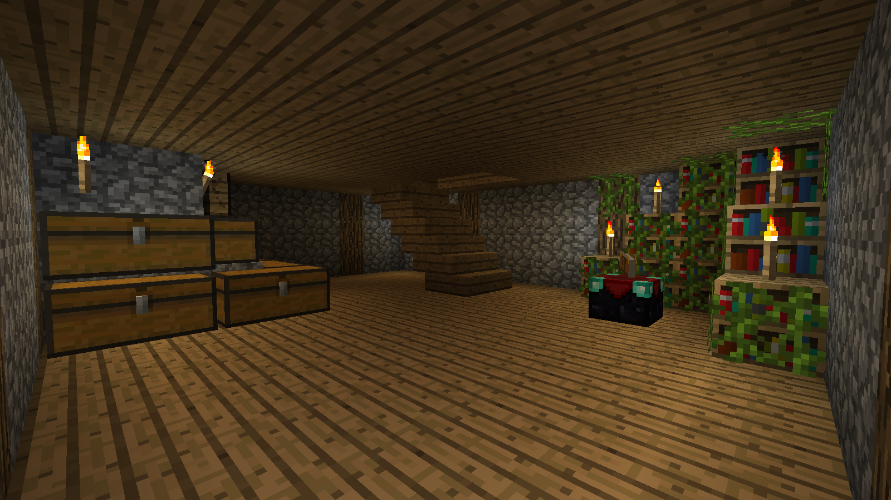
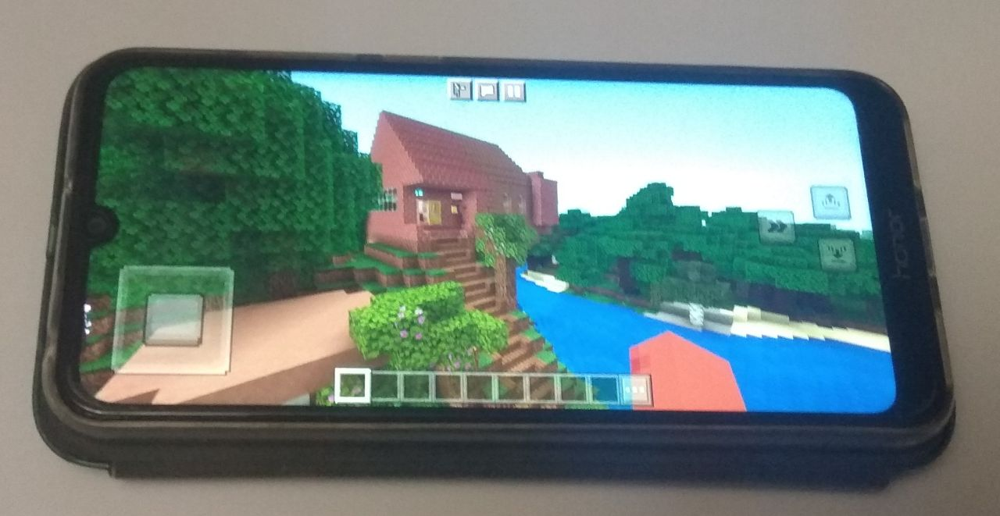

Я играю в Minecraft 5 лет.
Я люблю планировать постройки, строить их, прописывать команды,
продумывать последовательность действий.
Моим главным увлечение Minecraft являются два сервера,
которые я создал.
Один для игры на компьютере - IP:Danipro_Crut.aternos.me:26856,
а другой для игры на телефоне - IP:Daniprocrut.aternos.me:58630
Minecraft - это очень интересная и увлекательная игра!!!
 